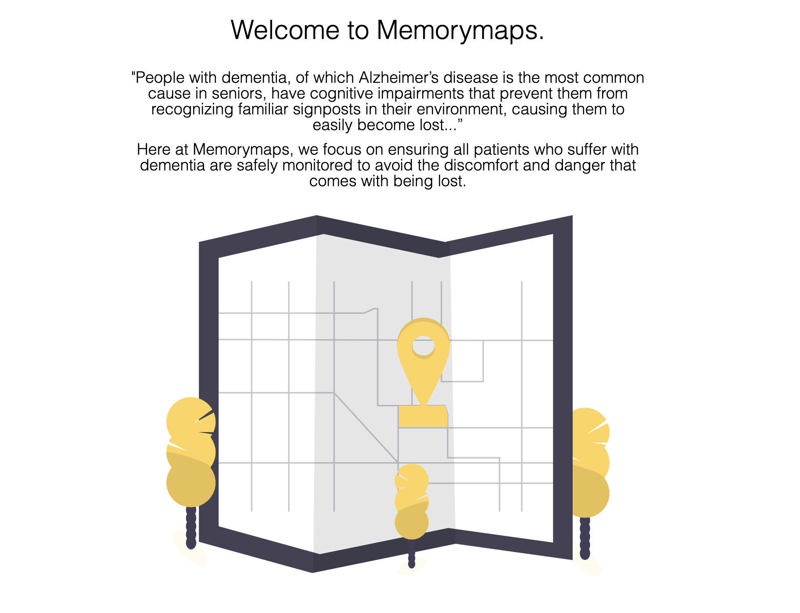
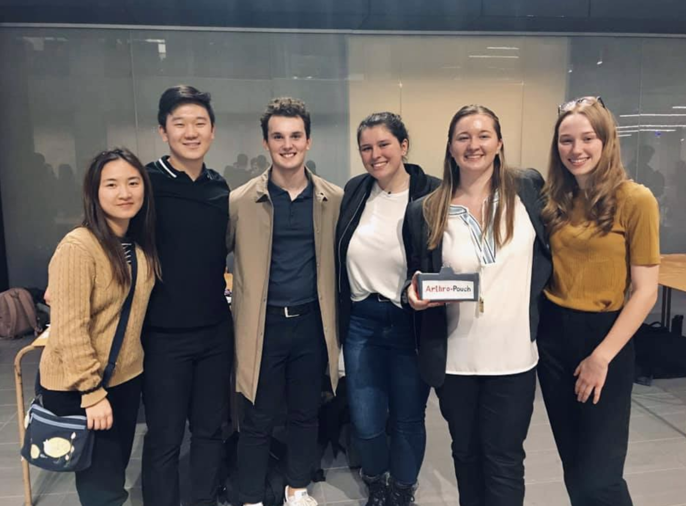
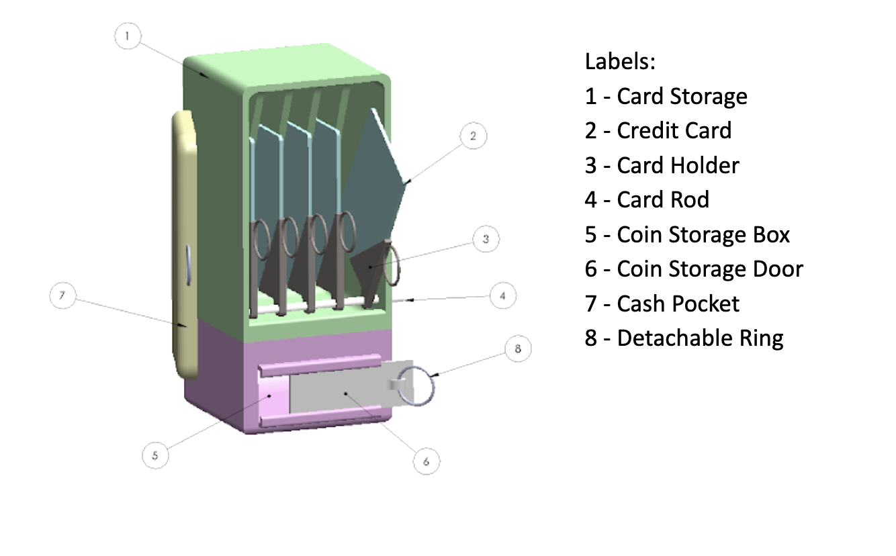
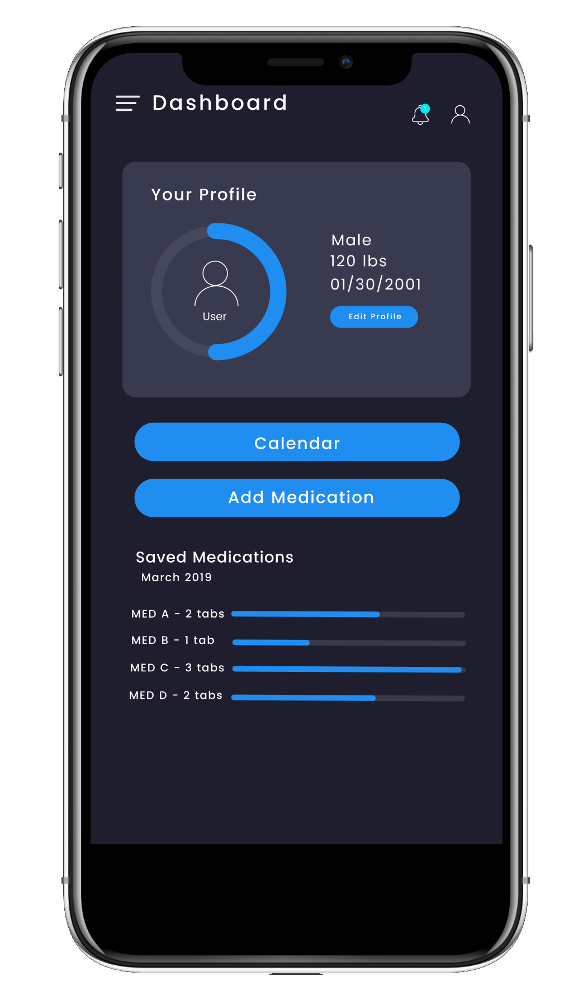
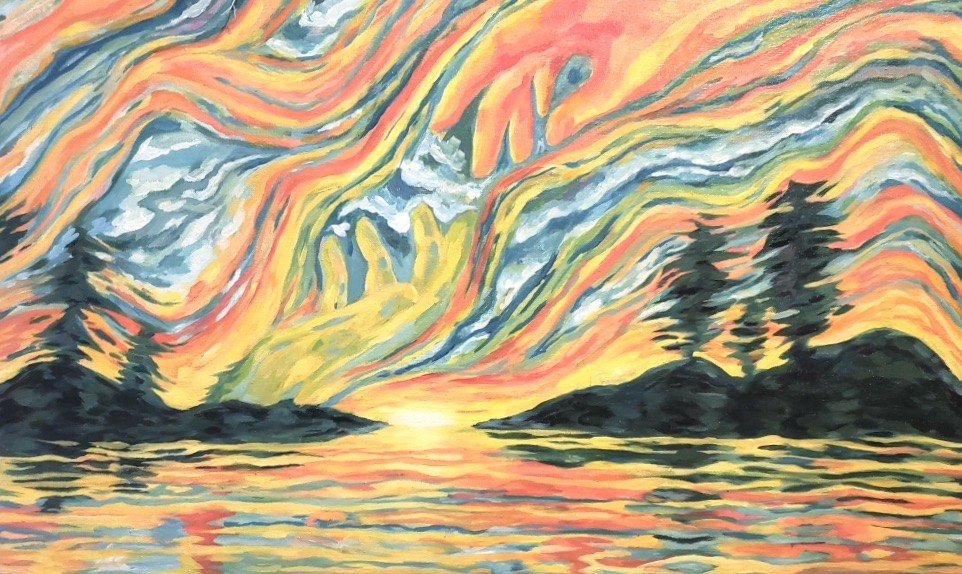
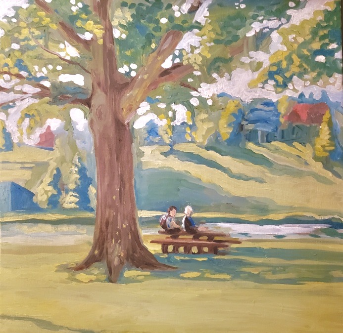
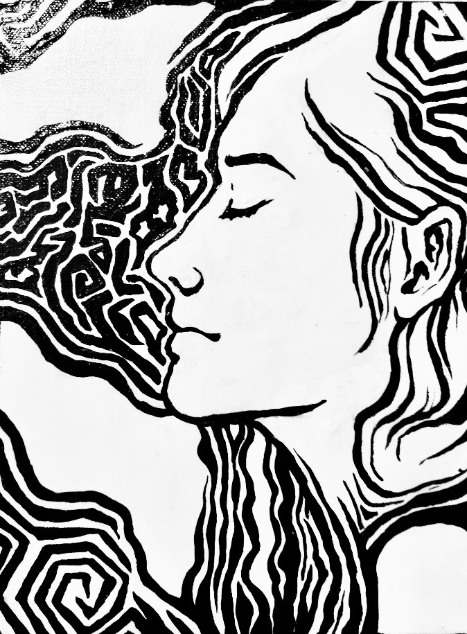
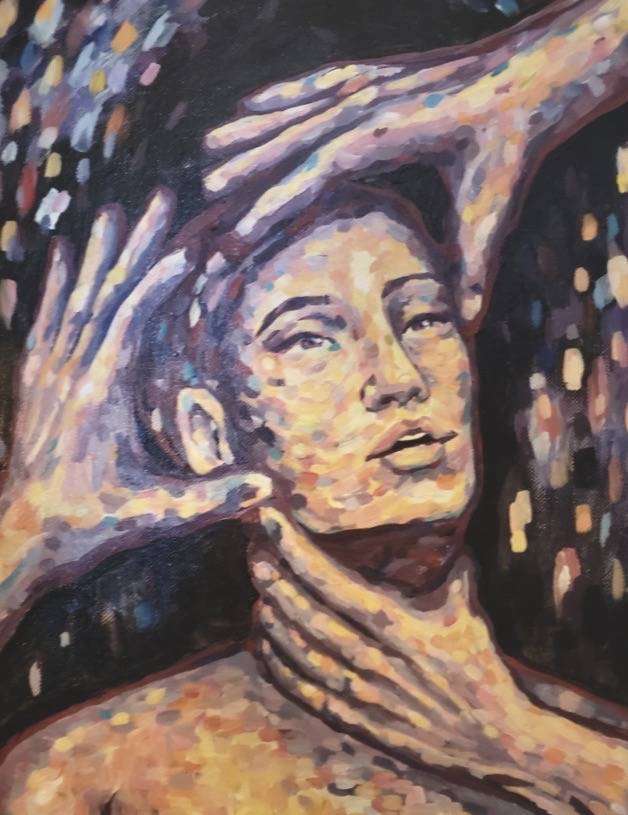
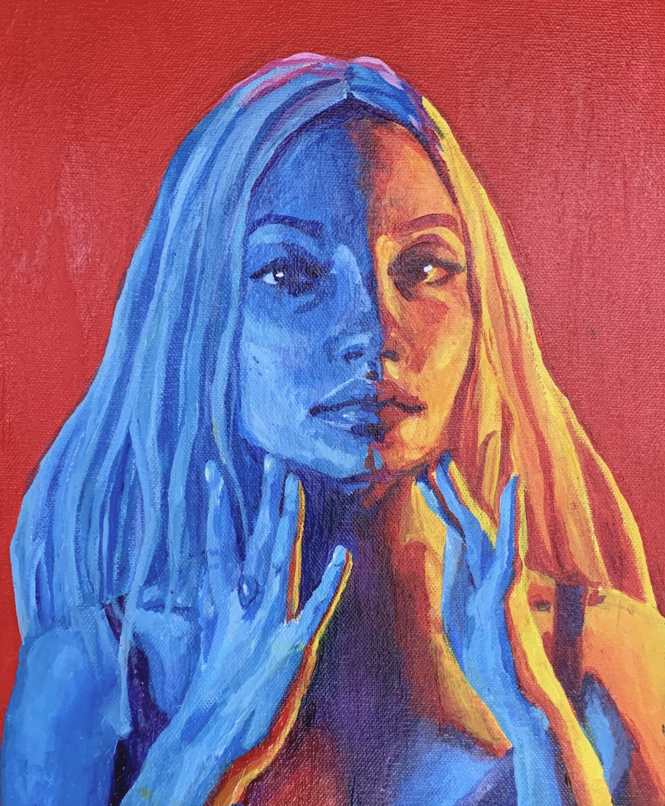

Personal Projects
Memory Maps | Waterloo Hackathon | January 2020

Developed front-end of a website using HTML, CSS, and Google Cloud’s
Geolocation API that focuses on preventing people with neurological
disorders such as dementia or Alzheimer’s from getting lost.
Collaborated with team members under high-pressure and short time
constraint to maximize efficiency and produce quality work.
The Accessible Wallet | University of Waterloo Design Project | September
2019 - December 2019

Designed an accessible wallet for users with arthritis to access the
contents of their wallet while eliminating pinching or gripping motions,
minimizing pain and stress on joints. Through collaborative and
iterative design, we fabricated the wallet using Solidworks and 3D
printed the prototype to conduct functional testing.

MEDICALC: App Design | HOSA Canada Competition | September 2018 - January
2019

Used Figma to Prototype and design an app to help patients efficiently
find correct and accurate dosages by inputting personal information.
Produced a clean front-end user interface to allow user to input
parameters to filter medication to their needs.
Visual Art, Painting and Design | Present




